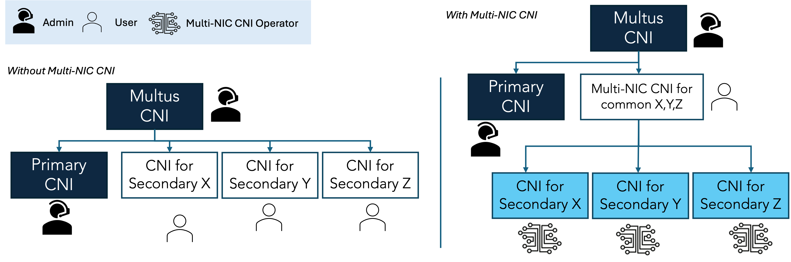
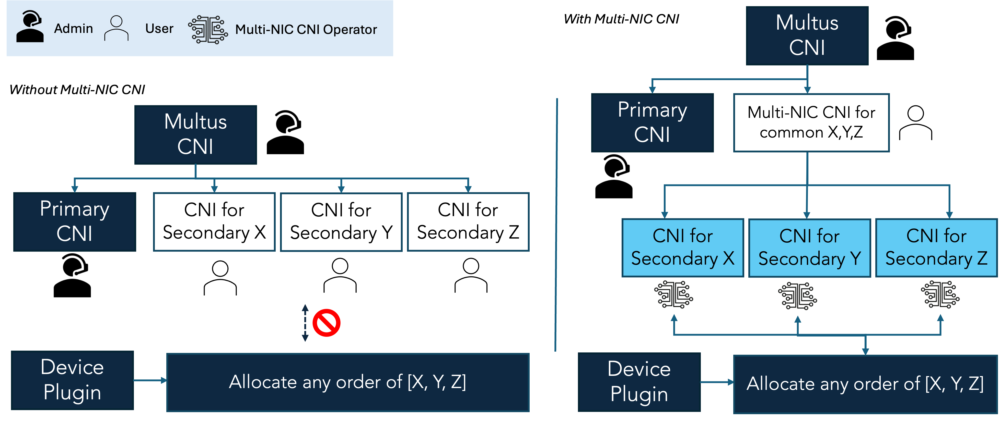

Multi-NIC CNI
Multi-NIC CNI is the CNI plugin for secondary networks operating on top of Multus CNI. This CNI offers several key features, outlined below, to help cluster administrators and users simplify the process of enabling high-performance networking.
- I) Unifying user-managed network definition: User can manage only one network definition for multiple secondary interfaces with a common CNI main plugin such as ipvlan, macvlan, and sr-iov.The Multi-NIC CNI automatically discovers all available secondary interfaces and handles them as a NIC pool.

- II) Bridging device plugin runtime results and CNI configuration: Multi-NIC CNI can configure CNI of network device in accordance to device plugin allocation results orderly.

- III) Building-in with several auto-configured CNIs Leveraging advantage point of managing multiple CNIs together with auto-discovery and dynamic interface selection, we built several auto-configured CNIs in the Multi-NIC CNI project including host-interface-local IPAM, multi-config IPAM, multi-gateway routing, and AWS-ipvlan CNI.
Check out the project on GitHub ➡️ Multi-NIC CNI.
For more insights, please check